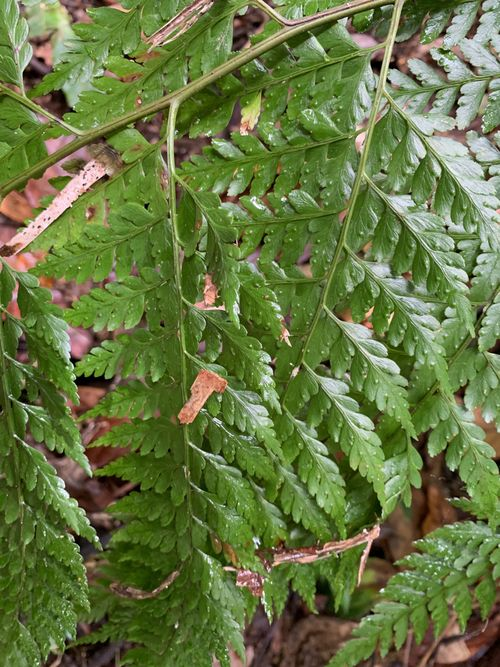

Saccolomataceae
(No common name; often Saccoloma Family)
Saccolomataceae is a family of medium to large terrestrial ferns belonging to the order Polypodiales. It primarily contains the genus Saccoloma (with Orthiopteris sometimes included or separated). These ferns typically have stout, creeping or erect rhizomes bearing scales, and large, pinnately compound fronds. They are distinguished by their marginal or submarginal sori protected by characteristic cup-shaped or pouch-like indusia opening towards the margin. The family has a pantropical distribution.
Overview
Saccolomataceae represents an early diverging lineage within the large and diverse order Polypodiales. The family is centered around the genus Saccoloma, found throughout the tropics. These are typically robust ferns of wet forest environments, often growing on forest floors, slopes, or along streams in montane areas.
They grow from stout rhizomes that are covered in dark, non-clathrate scales. The fronds are large, often triangular in outline, and usually 2- to 4-times pinnately compound. Reproductively, they are homosporous. The most distinctive feature is the sorus: located at or near the margin at vein endings, each sorus is protected by a unique indusium shaped like a cup or pouch ('sac'), which opens towards the frond edge. This gives the family its name (Saccoloma = pouched edge).
Phylogenetically, Saccolomataceae sits near the base of the Polypodiales order, possibly sister to the large eupolypods I clade, making it important for understanding the evolutionary relationships within this major fern group.
Quick Facts
- Scientific Name: Saccolomataceae
- Common Name: No widely accepted common name; Saccoloma Family.
- Number of Genera: 1 (Saccoloma; sometimes Orthiopteris included)
- Number of Species: Approximately 10-18
- Distribution: Pantropical (Neotropics, Africa/Madagascar, SE Asia, Malesia, Pacific).
- Key Features: Terrestrial, stout rhizome with scales, large compound fronds, marginal/submarginal sori with cup/pouch-shaped indusia opening outwards, homosporous.
- Evolutionary Group: Polypodiopsida (Leptosporangiate Ferns) - Polypodiales
Key Characteristics
Growth Form and Habit
Medium to large terrestrial ferns. Rhizomes are stout, short-creeping to erect, sometimes forming short trunks in older plants.
Fronds (Leaves)
Fronds arise from the rhizome apex, are typically large (up to 4 meters long), and often broadly triangular (deltate) in outline.
- Structure: Pinnately compound, typically 2-pinnate to 4-pinnate (rarely 1-pinnate).
- Texture: Herbaceous to somewhat leathery.
- Vernation: Young fronds show circinate vernation.
- Petioles (Stipes): Stout, bearing scales, especially at the base.
Fronds are generally monomorphic.
Indument
Rhizomes and petiole bases are covered in conspicuous scales. These scales are typically dark brown to blackish, relatively narrow, and non-clathrate (cell walls not forming a lattice pattern). Hairs may be present on axes or lamina in some species but scales are the dominant indument type on the rhizome/stipe base.
Sori and Indusial Characters
Saccolomataceae are homosporous. Spores are produced in sori located near the frond margin.
- Sorus Position: Sori are marginal or submarginal, borne singly at the terminus of veins.
- Indusium: Each sorus is protected by a distinctive cup-shaped or pouch-shaped (cyathiform or sac-like) indusium. This indusium is attached at its base and sides, and opens towards the frond margin.
- Receptacle: Sporangia are attached to a slightly elevated receptacle within the indusium.
Spores
Spores are trilete, tetrahedral, and ornamentation varies (e.g., granular, ridged).
Field Identification
Identifying Saccolomataceae involves recognizing the combination of a stout, scaly rhizome/base, large divided fronds, and the characteristic marginal sori with pouch-like indusia opening outwards.
Primary Identification Features
- Habit: Large terrestrial fern, often with a stout base or short trunk.
- Indument: Presence of dark scales on rhizome and stipe bases.
- Marginal/Submarginal Sori: Sori located at or very near the edge of the ultimate frond segments.
- Pouch-shaped Indusium: Sori protected by distinctive cup-like or pouch-like indusia opening towards the margin.
- Large, Divided Fronds: Fronds typically large and 2-4 times pinnate.
Common Confusion Points
- Dennstaedtiaceae: Some genera (e.g., Microlepia) have marginal/submarginal sori with cup-like indusia, but often differ in indument (typically hairy), rhizome type (often long-creeping), and frond texture.
- Lindsaeaceae: Often have marginal or submarginal sori with indusia opening towards the margin, but are typically smaller ferns, with different rhizome scales and frond architecture.
- Dicksoniaceae / Culcitaceae (Cyatheales): While having marginal sori and indusia, these belong to a different order. Dicksoniaceae/Culcitaceae typically have bivalvate indusia and hairy indument (not scales like Saccoloma).
- Dryopteridaceae / Athyriaceae (other Polypodiales): Usually have sori located away from the margin (superficial) and different types of indusia (e.g., kidney-shaped, linear) or are exindusiate.
Field Guide Quick Reference
Look For (Saccoloma):
- Stout rhizome/short trunk
- Dark scales on base
- Large (2-4 pinnate) fronds
- Marginal/submarginal sori
- Pouch/cup-shaped indusium opening outwards
- Pantropical wet forests
Distinguish From:
- Dennstaedtiaceae (often hairy, rhizome)
- Lindsaeaceae (often smaller, scales)
- Dicksoniaceae/Culcitaceae (hairy, bivalvate indusia)
- Other Polypodiales (soral position/type)
Notable Examples
The family primarily consists of the genus Saccoloma.

Saccoloma
(No common name)
The main genus of the family, found across the tropics. Species are large terrestrial ferns with scaly rhizomes/bases and characteristic marginal sori with pouch-like indusia. Saccoloma inaequale is a widespread and well-known species in the Neotropics.
Phylogeny and Classification
Saccolomataceae is placed within the large order Polypodiales, which contains the vast majority of living fern species. It represents an early diverging lineage within this order, branching off before the diversification of the major eupolypod clades. Its exact position is often shown near the base of the eupolypods I group, possibly sister to the remaining families in that large clade (which includes families like Pteridaceae, Aspleniaceae, Dryopteridaceae, Polypodiaceae, etc.).
Its phylogenetic isolation, combined with its unique soral morphology and pantropical distribution, makes Saccolomataceae crucial for understanding the early evolution and diversification of the Polypodiales order.
Position in Plant Phylogeny
- Kingdom: Plantae
- Clade: Tracheophytes (Vascular plants)
- Class: Polypodiopsida (Leptosporangiate ferns)
- Order: Polypodiales
- Family: Saccolomataceae
Evolutionary Significance
Saccolomataceae is important for:
- Basal Polypodiales Lineage: Provides insights into the early evolution and ancestral traits of the largest fern order.
- Soral Evolution: Its unique pouch-like marginal indusium represents one variation in soral protection within ferns.
- Pantropical Biogeography: Its wide distribution across the tropics suggests an ancient origin and successful dispersal or survival across different regions.